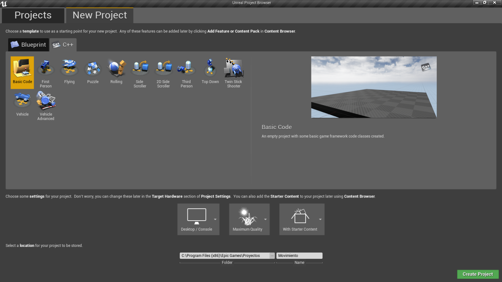

Implantar un sistema de animaciones a un personaje en primera persona en Unreal Engine 4
Juan José Gómez Simón

En este artículo, se hará un explicación introductoria y básica a cómo implantar un sistema de animaciones a un modelado 3D importado mediante el uso de "BluePrints".
Creando un personaje en primera persona con C++ en Unreal Engine 4
Juan José Gómez Simón
Este artículo presenta una pequeña introducción a UnrealEngine 4 mediante la explicación y creación de un personaje en primera persona que se mueve por un entorno 3D y donde se puede mover la cámara libremente.